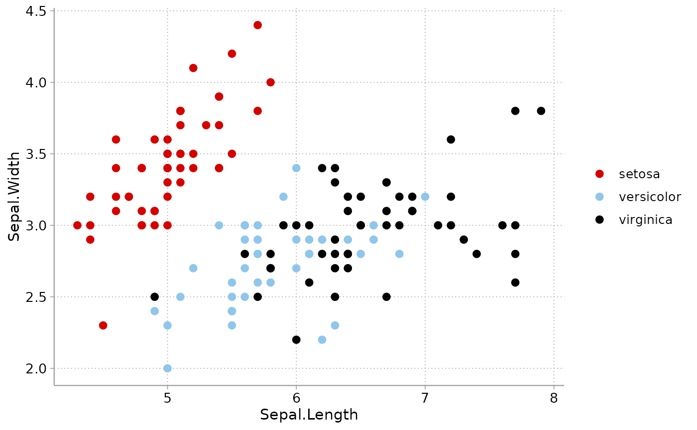
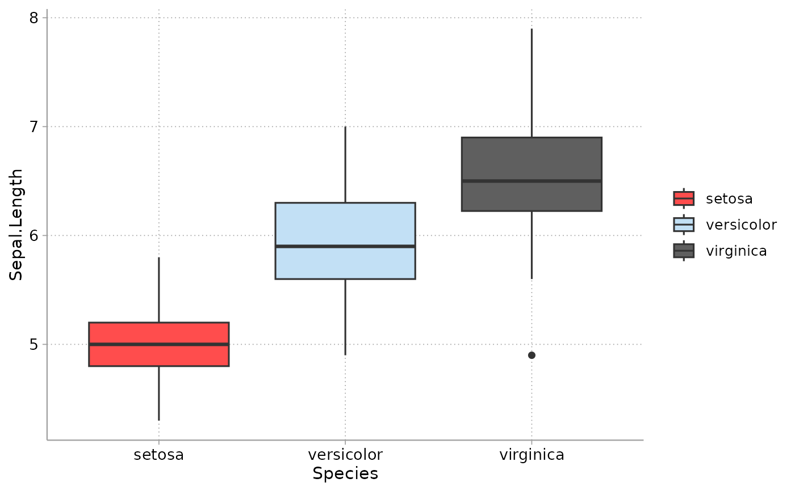
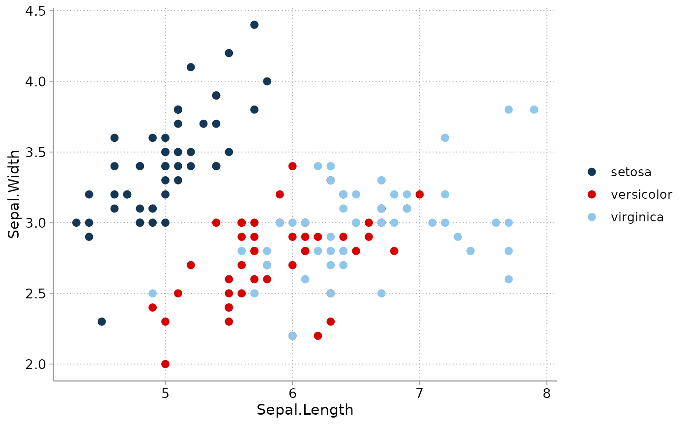

Discrete color and fill scales using the cleanplots color scheme
(Mize), a port of the colors from the Stata cleanplots graphing scheme.
The palette is designed for clean, publication-ready plots of predictions
and marginal effects.
Usage
scale_color_cleanplots(
palette = "default",
reverse = FALSE,
order = 1:10,
aesthetics = "color",
...
)
scale_colour_cleanplots(
palette = "default",
reverse = FALSE,
order = 1:10,
aesthetics = "color",
...
)
scale_fill_cleanplots(
palette = "default",
reverse = FALSE,
order = 1:10,
aesthetics = "fill",
...
)Arguments
- palette
Character name of palette:
"default"or"bars".- reverse
Logical. Should the palette be reversed?
- order
A vector of numbers from 1 to 10 indicating the order of colors to use (default:
1:10).- aesthetics
A vector of aesthetic names this scale should apply to (e.g.,
"color"or"fill").- ...
Additional arguments passed to
ggplot2::discrete_scale().
Details
The "default" palette contains the 10 colors used for markers, lines,
and confidence intervals. The "bars" palette contains the softer,
lighter versions of the same colors that the Stata scheme uses for bar
charts, area plots, and pie charts (because those elements use much more
ink); it is typically paired with scale_fill_cleanplots().
The cleanplots palette is only available as a discrete palette.
References
Mize, T. D. cleanplots: Stata graphing scheme. https://www.trentonmize.com/software/cleanplots
Examples
library(ggplot2)
ggplot(iris, aes(x = Sepal.Length, y = Sepal.Width, color = Species)) +
geom_point(size = 2) +
theme_cleanplots() +
scale_color_cleanplots()

ggplot(iris, aes(x = Species, y = Sepal.Length, fill = Species)) +
geom_boxplot() +
theme_cleanplots() +
scale_fill_cleanplots(palette = "bars")

# Use colors in a different order
ggplot(iris, aes(x = Sepal.Length, y = Sepal.Width, color = Species)) +
geom_point(size = 2) +
theme_cleanplots() +
scale_color_cleanplots(order = c(7, 1, 2))
